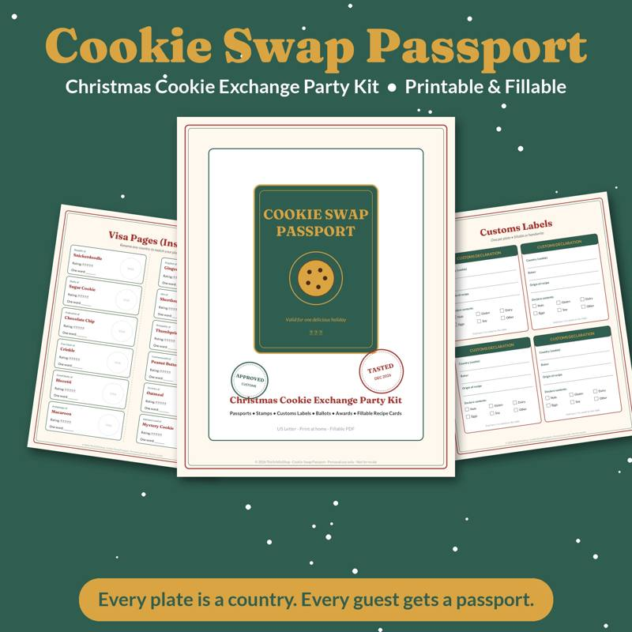

Cookie Exchange Party Ideas: How to Host a Christmas Cookie Swap
A cookie exchange is one of the easiest holiday parties to host and one of the most rewarding. Everyone bakes one kind of cookie, everyone goes home with a variety, and the host doesn't have to cook a full meal. Here's how to run a cookie swap that feels organized, fair and festive.
The basic format
Each guest bakes a batch of one type of cookie and brings it to the party. Cookies are set out on a table, everyone mingles and samples, and then guests fill a container with an assortment to take home. That's it. The rest is details — and the details are what make a swap great.
How many cookies should each guest bring?
A common approach is to ask each guest to bring one dozen cookies per guest, plus one extra dozen for sampling at the party. So with eight guests, each person brings nine dozen. That's a lot of baking, so for larger groups many hosts scale down to half a dozen per guest. Decide based on your group and state the number clearly on the invitation so nobody is guessing.
Ideal group size is usually six to twelve people. Fewer than six and the variety is thin; more than twelve and the baking load gets heavy.
Invitations
Send invitations two to three weeks ahead so people have time to plan and shop. Include:
- Date, time and address
- How many cookies to bring
- A request to RSVP with their cookie type (to avoid five batches of chocolate chip)
- A request to bring a container for taking cookies home
- A note to bring copies of their recipe, if you're sharing recipes
A shared online sign-up sheet or group chat makes it easy to claim cookie types.
Rules that keep it fair
- Homemade only. Most swaps ask for homemade cookies. If someone isn't a baker, consider letting them bring drinks or supplies instead.
- One type per person. Variety is the point.
- Sturdy cookies travel better. Encourage cookies that hold up — shortbread, crinkles, snickerdoodles, gingerbread, biscotti, thumbprints. Delicate meringues and cream-filled cookies can be tricky.
- Label allergens. Ask guests to note nuts, gluten, dairy or eggs on a small card.
Setting up the cookie table
- Use a long table with a tablecloth and leave space between each batch.
- Give each baker a tent card with the cookie name, their name and allergen notes.
- Put the sampling dozen on a separate plate so the swap supply stays intact.
- Provide tongs or small serving spatulas to keep things tidy.
- Set out extra containers, bags or boxes for anyone who forgot.
Ways to run the swap
The free-for-all
Everyone walks around and takes the agreed number from each batch. Simple and fast.
Round-robin
Guests take turns choosing one cookie at a time in order until the table is empty. Feels fair and makes a fun ritual.
Passport style
Each guest gets a "passport" card. As they collect cookies from each baker, they get a stamp or sticker. It adds a playful touch and helps everyone make sure they've visited every station. Our Cookie Swap Passport party kit includes printable passports, recipe cards, cookie labels and voting ballots for exactly this setup.
Games and contests
A cookie exchange is mostly about mingling, but a light contest adds fun:
- Best cookie votes: categories like Best Tasting, Most Creative, Best Decorated, Most Nostalgic.
- Blind taste test: number the cookies and have guests guess who baked what.
- Recipe story share: each baker tells the story behind their cookie in thirty seconds — family recipes always get the biggest reaction.
- Decorating station: set out plain sugar cookies with icing and sprinkles for guests to decorate and take home.
Small prizes — a nice spatula, a cookie cutter set, a tin — are plenty.
Food and drinks
Since everyone will be eating sweets, balance it with savory snacks: a cheese board, veggies and dip, pretzels or small sandwiches. For drinks, coffee, hot cocoa, cider, milk and a festive punch cover most tastes.
Packaging ideas for taking cookies home
- Tins and cookie boxes
- Clear cellophane bags tied with ribbon
- Takeout-style boxes
- Parchment between layers so cookies don't stick
Printed labels or tags make the take-home boxes look giftable — many guests end up passing some along to neighbors or coworkers.
Recipe sharing
Ask each guest to bring printed copies of their recipe, or collect recipes ahead and put them in a simple booklet. A shared digital album works too. Recipe cards are one of the things guests appreciate most after the party.
Host timeline
- Three weeks out: send invites, set the cookie count.
- Two weeks out: confirm cookie types to avoid duplicates.
- One week out: buy containers, labels and drinks; plan savory snacks.
- Day before: set up the table, print tent cards and passports.
- Day of: bake your own batch early, set out drinks and enjoy.
If the cookie swap is one of many holiday events on your calendar, a holiday planner helps you keep track of dates, baking lists and budgets. Our Holiday Mission Control planner has pages for party plans, gift lists and countdowns.
Looking for more party ideas? Try our ugly sweater contest ideas or chili cook-off rules and scoring guide.

A cookie exchange kit with passports, recipe cards, labels and voting.
See it on Payhip
Shop the printables mentioned
Cookie Swap Passport Party Kit
A cookie exchange kit with passports, recipe cards, labels and voting.
View on PayhipHoliday Mission Control Christmas Planner
A printable Christmas planner with countdown, gift tracker, budget and meal pages.
View on PayhipMore guides
- Baby Shower Prediction Game Ideas (and How to Run Them)
- Bridal Shower Games That Aren't Cringe
- Chili Cook-Off Rules and Scoring: A Complete Host Guide
- Christmas Party Games for Adults (No Supplies Needed)
- A Family Chore System That Actually Works
- Galentine's Party Games Your Friends Will Actually Love
- The Meal Planning Game: How to Get Your Family to Help Plan Dinners
- New Year's Eve Family Traditions Kids Will Love
- Snow Day Activities for Kids: 30 Ideas Indoors and Out
- Teacher Gift Ideas From the Whole Class (Thoughtful and Budget-Friendly)
- Thanksgiving Kids Table Activities That Keep Them Busy
- Ugly Sweater Contest Ideas: Categories, Judging and Fun Twists
- Vacation Rental Cleaning Checklist: Room-by-Room Turnover Guide
- Valentine's Escape Room for Couples at Home: How to Set One Up